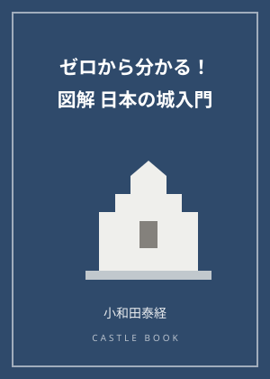

天守を乗せる準備が整う――弘前城、重さ210トンの耐圧盤の固定が完了

城と神社にまつわる新しい動きをお伝えするニュース記事です。出典は日テレNEWS NNN（2026年10月27日、青森放送の取材）です。青森県弘前市の弘前城で、天守を本来の場所に戻す「曳戻し」に合わせた耐震工事が進み、天守の重さを均等に支える土台「耐圧盤」の整備が完了しました。このサイトのブログでは、着座の時期が2027年秋ごろへ見直された経緯も紹介していますが、今回はその後の進捗として、土台側の準備が整ったという知らせです。
210トンの土台を4時間かけて固定――水平を崩さない慎重な作業
この日行われたのは、重さ210トンの鉄筋コンクリート製の耐圧盤を、地面に打ち込んだ4本の杭の上に下ろして固定する作業です。ジャッキを使って1.2メートル下げていき、水平を崩さないよう慎重に進められ、4時間かかって天守を乗せる準備が整いました。弘前市公園緑地課の担当者は、まずは天守の基礎の部分の耐震化が終わったことになると説明しています。
曳戻しの流れ――雪の中断をはさみ来年3月に移動完了、秋ごろに着座へ
天守の移動は、雪が降る間の中断をはさみ、来年3月に終わる見通しです。その後、天守本体の耐震化を含めた保存修理に取り掛かり、秋ごろまでに今回整備した耐圧盤の上に着座させる計画です。つまり、土台の準備が整ったいま、天守が戻ってきたあとの本体の作業へと段階が進むことになります。
検定の学習ポイント
お城検定の学習と結びつくテーマです。第一に「耐圧盤」。天守の重さを均等に支えるための土台で、大きな地震にも耐えられるよう基礎の耐震化の一環として整備されました。第二に「曳戻し」。天守を本来の場所へ戻すため、移動させる工事のことです。第三に「保存修理と耐震化」。天守そのものを守るための修理と、地震への備えは一体で進められます。弘前城は現存12天守のひとつで国の重要文化財でもあり、石垣の積み直しと天守の移動・修理という一連の流れを、城を守る取り組みとして押さえておきましょう。
天守が動く城、土台から作り直す城――弘前城の「世紀の大改修」は、まだ途中です。着座までの流れを追うことで、城を後世へ残すための手順が見えてきます。訪れる際は、弘前市や弘前公園の最新の案内で見学の方法を確認してからお出かけください。
天守つるぎから一言：210トンの土台を、水平を崩さずに1.2メートル下げる――数字だけでも、どれだけ慎重な作業かが伝わりますね。来年3月の移動完了と、秋ごろの着座まで、続きを追いかけたいです。
城と神社のニュースや検定の情報は、公式SNSでもお知らせしています。InstagramとThreadsの @tabi.kentei をフォローして、最新情報をチェックしてください。
同じテーマの記事：
この記事のおすすめ本

パッケージのイメージ（実際の商品とは異なります）
PR プラモデル
童友社 1/450 日本の名城 ジョイジョイコレクション 松山城 プラモデル（JJ-7）
メーカー：童友社（DOYUSHA）
愛媛県松山市の松山城（伊予松山城）を題材にした、童友社のプラモデルです。スケールは1/450で、シリーズ名は「日本の名城 ジョイジョイコレクション」、品番はJJ-7。対象年齢は15歳以上と表示されています。画像はパッケージのイメージです。
Amazonで見る価格はAmazonでご確認ください／リンク先：Amazon.co.jp

表紙イメージ（実際の表紙とは異なります）
PR 入門書
ゼロから分かる！ 図解日本の城入門
著者：小和田泰経
縄張・堀と石垣・天守のしくみまで、イラストでやさしく解説。城めぐり初心者が最初に持つ一冊として、検定の教科書と合わせて読むのにおすすめです。
Amazonで見る価格はAmazonでご確認ください／リンク先：Amazon.co.jp

表紙イメージ（実際の表紙とは異なります）
PR ガイド・スタンプ帳
日本100名城に行こう 公式スタンプ帳つき
著者：公益財団法人 日本城郭協会
日本100名城の公式ガイドブック。1城1ページで見どころを解説し、巻末がそのまま公式スタンプ帳になります。スタンプラリーを始めるならまずこの一冊。
Amazonで見る価格はAmazonでご確認ください／リンク先：Amazon.co.jp
当サイトは、Amazon.co.jpを宣伝しリンクすることによってサイトが紹介料を獲得できる手段を提供することを目的に設定されたアフィリエイトプログラムである、Amazonアソシエイト・プログラムの参加者です。価格・在庫はリンク先でご確認ください。